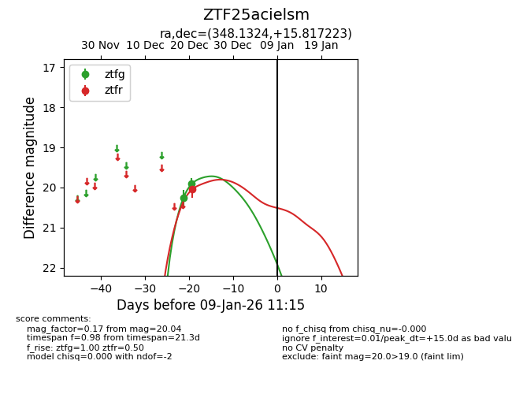
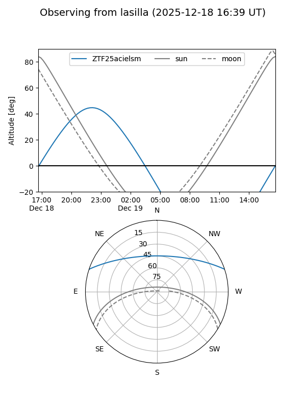
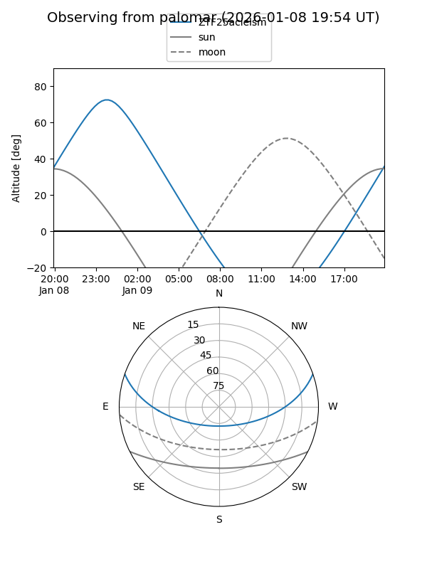

ZTF25acielsm
Target ZTF25acielsm at 2025-12-31 16:59
Aliases and brokers:
FINK:
Lasair:
ALeRCE:
alt names
ZTF25acielsm (ztf,fink_ztf)
Coordinates:
equatorial (ra, dec) = 348.1324,+15.81722
equatorial (HMS+DMS) = 23:12:31.77,+15:49:02.00
galactic (l, b) = (90.8119,-40.80521)
Flags:
Photometry:
last ztfg=19.91, ztfr=20.04
2 ztfg, 1 ztfr detections
Lightcurve

Visibility


Additional plots